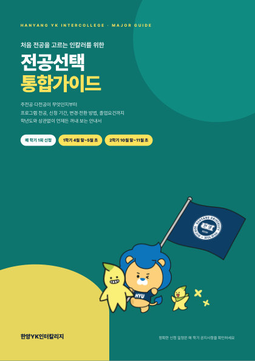
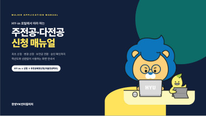

주전공·다전공이 무엇인지, 프로그램 전공과 핵심(특화) 프로그램의 차이, 신청·변경·부전공 전환 방법까지. 학년도와 상관없이 언제든 꺼내 보세요.

용어 · 프로그램 완전정복 · 조합 규칙 · 진입요건 · 신청 창구 · 상황별 가이드 · 졸업요건 · FAQ
펼쳐보기 →
HY-in 화면 따라 하기 · 변경 신청 · 다중전공 → 부전공 전환 · 추가 다전공 · 승인 확인
펼쳐보기 →휴학 중에는 신청할 수 없어요. 예) 2027-1학기부터 바뀐 전공으로 공부하려면 2026-2학기에 재학생으로 신청해야 하고, 2027-1학기 복학생은 2027-1학기 기간에 신청해 2027-2학기부터 이수합니다.
신청은 기간에만 · 마지막 날 오후 5시 마감 · 기한 엄수, 연장 불가
주전공·다전공 중 최소 1개는 한양YK인터칼리지 융합특화 프로그램이어야 해요.
일반학부(과)를 다전공으로 하려면 그 학부(과)가 등록한 핵심(특화) 프로그램을 선택해요.
인칼 전용 기간에 신청한 다전공은 인칼 전용 기간에만, 일반학과 기간에 신청한 다전공은 그 기간에만 변경·취소할 수 있어요.
서울캠퍼스 일반학과 다전공 기간에 타 학과 학생과 동일한 경쟁 선발 원칙으로 신청합니다.